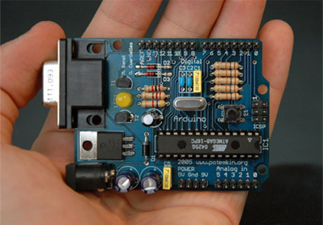

It is you that makes you~Anonymous
Arduino is an open-source hardware and software company, project and user community that designs and manufactures single-board microcontrollers and microcontroller kits for building digital devices and interactive objects that can sense and control both physically and digitally. Its products are licensed under the GNU Lesser General Public License (LGPL) or the GNU General Public License (GPL),[1] permitting the manufacture of Arduino boards and software distribution by anyone.
Arduino boards are available commercially in preassembled form or as do-it-yourself (DIY) kits.
Arduino board designs use a variety of microprocessors and controllers. The boards are equipped with sets of digital and analog input/output (I/O) pins that may be interfaced to various expansion boards or breadboards (shields) and other circuits.
The boards feature serial communications interfaces, including Universal Serial Bus (USB) on some models, which are also used for loading programs from personal computers. The microcontrollers are typically programmed using a dialect of features from the programming languages C and C++. In addition to using traditional compiler toolchains, the Arduino project provides an integrated development environment (IDE) based on the Processing language project.

The name Arduino comes from a bar in Ivrea, Italy, where some of the founders of the project used to meet. The bar was named after Arduin of Ivrea, who was the margrave of the March of Ivrea and King of Italy from 1002 to 1014
IDE
The Arduino integrated development environment (IDE) is a cross-platform application (for Windows, macOS, Linux) that is written in the programming language Java. It originated from the IDE for the languages Processing and Wiring. It includes a code editor with features such as text cutting and pasting, searching and replacing text, automatic indenting, brace matching, and syntax highlighting, and provides simple one-click mechanisms to compile and upload programs to an Arduino board. It also contains a message area, a text console, a toolbar with buttons for common functions and a hierarchy of operation menus. The source code for the IDE is released under the GNU General Public License, version 2. The Arduino IDE supports the languages C and C++ using special rules of code structuring. The Arduino IDE supplies a software library from the Wiring project, which provides many common input and output procedures. User-written code only requires two basic functions, for starting the sketch and the main program loop, that are compiled and linked with a program stub main() into an executable cyclic executive program with the GNU toolchain, also included with the IDE distribution. The Arduino IDE employs the program avrdude to convert the executable code into a text file in hexadecimal encoding that is loaded into the Arduino board by a loader program in the board's firmware.
The Arduino IDE supports the languages C and C++ using special rules of code structuring. The Arduino IDE supplies a software library from the Wiring project, which provides many common input and output procedures. User-written code only requires two basic functions, for starting the sketch and the main program loop, that are compiled and linked with a program stub main() into an executable cyclic executive program with the GNU toolchain, also included with the IDE distribution. The Arduino IDE employs the program avrdude to convert the executable code into a text file in hexadecimal encoding that is loaded into the Arduino board by a loader program in the board's firmware.